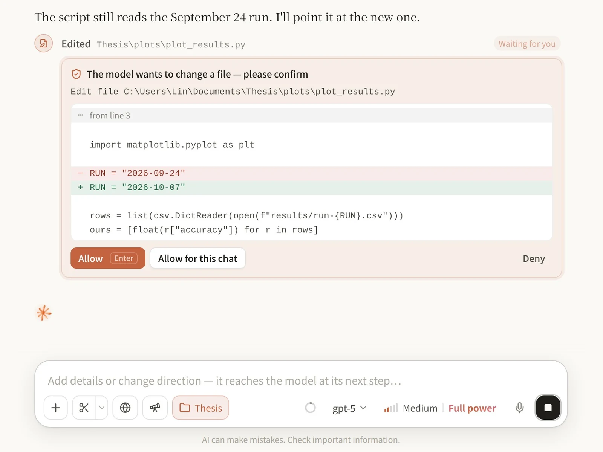

Hand it a folder.把文件夹交给它。
Link a project folder and Clause reads, searches and edits the files in it, runs your scripts and shows you exactly what changed. You decide how much it does on its own: ask before every change, only before risky ones, or never. 绑定项目文件夹后，Clause 能读取、搜索和修改里面的文件，运行你的脚本，并把每一处改动清楚地列给你。放手多少由你决定：每次修改都先问、只在有风险时问，或者完全放手。
- Every change is backed up and can be undone每一处改动都有备份，可以撤销
- Runs commands in PowerShell only if you switch them on只有你打开开关，才会运行 PowerShell 命令
- Reads PDF, Word, Excel and PowerPoint files能读 PDF、Word、Excel 和 PowerPoint
